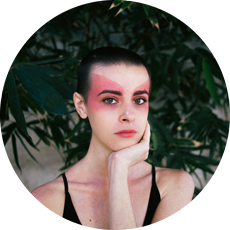

let's design.
Majoring in Cognitive Science and specializing in Human-Computer Interaction, I'm passionate to create fresh and seamless user experiences in a variety of platforms.
As an alumni of a project-based school, I enjoy collaborating with my peers and am unafraid of leading the pack, and have no problem working alone.
My love for photography extends past the ability to produce high quality images, to help create memorable experiences, which can be carried into design.
let's shoot.
Fashion/Lifestyle
As head photographer for Fashion Quarterly, I practice shooting aesthetic and details, as well as coherently trying to capture certain vibes of lifestyle.
As head photographer for Fashion Quarterly, I practice shooting aesthetic and details, as well as coherently trying to capture certain vibes of lifestyle.

Portraits
Capturing the profile of a person seems the most natural to me; I believe conveying mood and expression is powerful.
Capturing the profile of a person seems the most natural to me; I believe conveying mood and expression is powerful.
Weddings/Engagement/Couples
One of the most amazing things to capture in still images are representations of love. Love transcends time and space. I aspire to document affection and bliss through the means of photography.